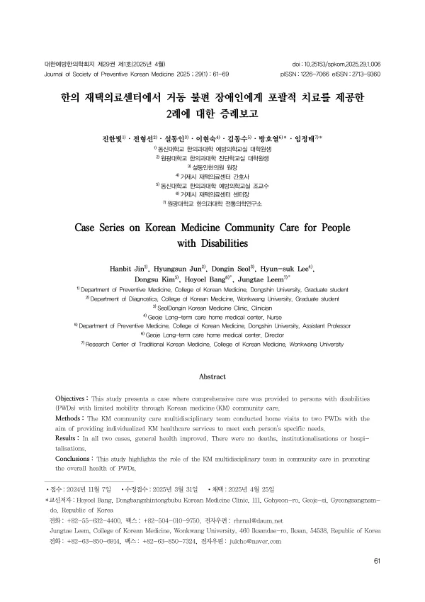

Case Series on Korean Medicine Community Care for People with Disabilities
Jin H, Jun H, Seol D, Lee HS, Kim D, Bang H, Leem J
Journal of Society of Preventive Korean Medicine 29(1):61-69

첫 장 · 오픈액세스First page · open access
논문 소개Summary
돌봄 서비스는 주거와 돌봄, 요양, 보건의료, 일상생활 지원을 개인의 필요에 맞춰 이어 주는 사회서비스입니다. 공중보건의 핵심 과제가 건강 격차의 해소로 옮겨 가면서 소외계층에게 이를 제공하려는 정책이 이어지고 있고, 한국도 장애인의 사회적 배제를 줄이기 위해 지역사회 기반 보건의료체계를 강화하겠다고 밝혔습니다. 이 증례보고는 그 자리에서 한의 재택의료센터가 무엇을 할 수 있었는지를 기록한 것입니다.
거동이 불편한 중증 장애인 두 사람의 집을 다학제 팀이 방문해 포괄평가를 하고 각자에게 맞는 돌봄 계획을 세웠습니다. 첫 번째는 70대 남성으로 장기요양 1등급이었고, 셋째 목뼈 골절의 후유증으로 전신이 마비된 상태에서 옴 감염으로 인한 전신 가려움과 욕창이 주된 문제였습니다. 두 번째는 80대 남성으로 장기요양 4등급이었습니다.
첫 사례에서 옴은 지역사회 연계로 풀었습니다. 지역 의원과 피부과, 약국, 보건소, 면사무소, 재가노인복지센터, 보호자가 함께 참여했고 크로타미톤 연고를 썼습니다. 첫 방역과 치료 뒤에는 사회관계망 서비스로 연고를 온몸에 바르는 방법을 계속 교육했고 닷새 만에 완치로 판단했습니다. 가려움과 욕창에는 한의사가 방문해 침과 한약, 식이를 다뤘고, 간호 방문으로 활력징후 감시와 욕창 드레싱, 체위 변경, 질병 교육이 이루어졌으며, 사회복지사가 지역 자원을 연결했습니다.
보호자에 대한 지원도 함께 했습니다. 긴 간병으로 지친 보호자에게 돌봄 교육과 정서적 지지를 제공하고 개인 시간을 낼 수 있게 했으며 건강 상담도 했습니다.
평가 지표는 사망과 요양시설 입소, 병원 입원 여부였습니다. 지역사회에 계속 사는 것을 지원하는 것이 재택의료센터의 목표이기 때문입니다. 첫 사례는 2024년 5월까지 65회, 두 번째는 21회 방문했고 두 사람 모두 사망이나 시설 입소, 입원 없이 지역사회에 살고 있습니다.
한계는 두 사례이고 정량 지표가 사망·입소·입원 세 가지에 그친다는 점입니다. 나머지는 환자와 보호자의 말로 남았습니다.
Community care is a social service that links housing, care, long-term care, health services and support for daily living to what an individual actually needs. As the central task of public health has shifted toward closing health inequalities, policies to extend such care to marginalised populations have followed, and Korea has stated its intent to strengthen community-based health systems to reduce the social exclusion of people with disabilities. This report records what a Korean medicine home-care centre was able to do in that setting.
A multidisciplinary team visited the homes of two severely disabled men with limited mobility, conducted a comprehensive assessment, and built an individual care plan for each. The first, in his seventies and at long-term care level 1, was paralysed following a fracture of the third cervical vertebra; his main problems were generalised itching from scabies infestation and pressure ulcers. The second was in his eighties, at long-term care level 4.
In the first case the scabies was resolved through community linkage. A local clinic, a dermatologist, a pharmacy, the public health centre, the township office, a home-care centre for older people and the family all took part, and crotamiton ointment was used. After the initial disinfestation and treatment, instruction on applying the ointment over the whole body continued by social network service, and cure was judged at five days. For the itching and pressure ulcers a Korean medicine doctor visited to provide acupuncture, herbal medicine and dietary management; nursing visits covered vital sign monitoring, ulcer dressing, repositioning and disease education; and a social worker connected community resources.
Support extended to the carer. Worn down by a long period of caregiving, the carer received training, continuing emotional support, time to themselves, and consultation about their own health.
The outcome measures were death, institutionalisation and hospitalisation — because supporting people to keep living in their own community is what the centre exists for. The first case received 65 visits by May 2024 and the second 21, and both remain in the community with no death, admission to a facility or hospitalisation.
The limitations are two cases and quantitative measures confined to those three. The rest is recorded in the words of the patients and their carers.
인용Cite
Jin H, Jun H, Seol D, Lee HS, Kim D, Bang H, Leem J. Case Series on Korean Medicine Community Care for People with Disabilities. Journal of Society of Preventive Korean Medicine. 2025;29(1):61-69. doi:10.25153/spkom.2025.29.1.006